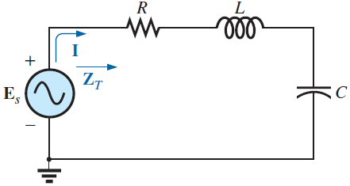
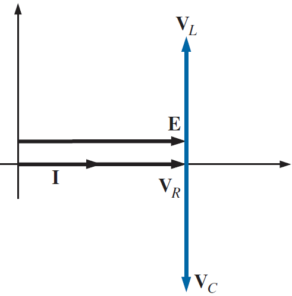
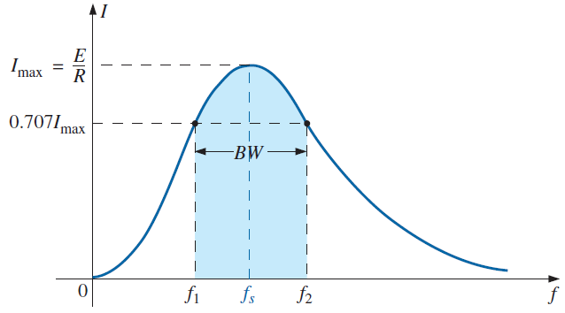
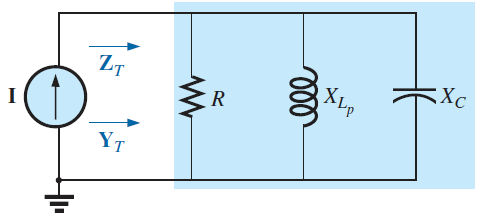
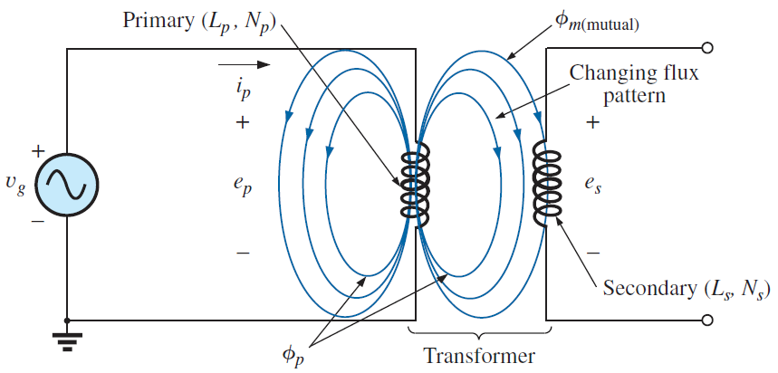
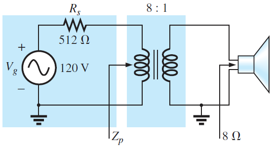

Resonance & Transformers Lecture 7
Two showcase applications of everything so far. Resonance: at one magic frequency XL and XC cancel and the circuit becomes razor-sharp frequency-selective — the heart of every radio tuner. Transformers: two magnetically-coupled coils that convert voltages, currents and impedances.
1 The Series Resonant Circuit
Take R, L and C in series. Their total impedance is ZT = R + j(XL − XC). Since XL grows with frequency and XC shrinks, there is exactly one frequency where they are equal and the j-part vanishes. That is resonance:
- at resonance the circuit looks purely resistive: v and i in phase, Fp = 1
- the supply current is maximum: I = E/R
Setting ωL = 1/ωC gives the resonant frequency:
- fs – series resonant frequency (Hz); L in henries, C in farads


Reference: Boylestad, Ch. 20.2–20.4.
2 The Quality Factor Q
How "sharp" is the resonance? The quality factor compares the reactive power in L to the power burned in R — equivalently, reactance over resistance at resonance:
- Qs – dimensionless; bigger Q = sharper, more selective circuit
- small series R → high Q
Resonant voltage rise — the classic exam surprise
Apply the voltage divider at resonance: VL = XLE/ZT = XLE/R. So:
- the voltages across L and C at resonance are Q times the source voltage
- lecture example: Qs = 480 Ω / 6 Ω = 80, E = 10 V → VL = VC = 800 V!
Reference: Boylestad, Ch. 20.3–20.5.
3 Selectivity & Bandwidth
Plot the current versus frequency: it peaks at fs and falls off on both sides. The frequencies f1, f2 where the current drops to 0.707 Imax (the half-power points, since P ∝ I²) bound the band the circuit "accepts":

- BW – bandwidth (Hz)
- high Q ⇒ narrow band ⇒ very selective (good for picking one radio station)
- also from the lecture: fs = √(f₁f₂) — the resonant frequency is the geometric mean
Reference: Boylestad, Ch. 20.6–20.7.
4 The Parallel Resonant Circuit
Now put L and C in parallel (a "tank circuit") fed by a current source. The same resonance condition flips every behaviour upside-down:

| Series resonance | Parallel resonance | |
|---|---|---|
| Impedance at fr | Minimum (= R) | Maximum |
| Current from source | Maximum (E/R) | Minimum |
| Phase at fr | unity Fp (resistive) | unity Fp (resistive) |
| What's huge inside | VL = VC = QE | circulating current in the L–C loop |
- for a high-Q coil (Q ≥ 10), Qp ≈ Ql of the coil itself = XL/Rl
- energy sloshes between L and C; the source only tops up the losses
Reference: Boylestad, Ch. 20.8–20.12.
5 Transformers & Mutual Inductance
A transformer is two coils sharing a magnetic path. AC current in the primary creates a changing flux; by Faraday's law that changing flux induces a voltage in the secondary — no electrical contact needed:

Mutual inductance M measures how well flux from one coil links the other, via the coefficient of coupling k (the fraction of primary flux that reaches the secondary, 0…1):
- M – mutual inductance (H); k – coupling coefficient (iron core ≈ 1, air core much less)
- induced voltages: es = M dip/dt and ep = M dis/dt
Mutually coupled coils in series
When coupled coils are wired in series, their mutual flux either helps or fights, so total inductance picks up a ±2M term per coupled pair:
- +2M when fluxes aid, −2M when they oppose (lecture example combines three coils with mixed signs)
Reference: Boylestad, Ch. 22.2–22.4.
6 Turns Ratio & Reflected Impedance
For an iron-core transformer (k ≈ 1) everything follows from the turns ratio:
- Np, Ns – primary / secondary turns
- voltages scale with turns; currents scale inversely (energy is conserved)
- a > 1: step-down voltage; a < 1: step-up
Reflected impedance — the impedance transformer
From the primary's point of view, a load ZL on the secondary looks a² times bigger:
- Zp – impedance seen at the primary terminals
- lecture example: a = 8, speaker ZL = 8 Ω → Zp = 8² × 8 = 512 Ω

Reference: Boylestad, Ch. 22.5–22.7.